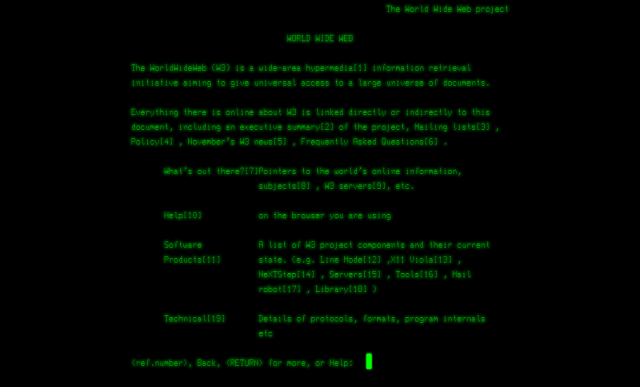

Tim Berners-Lee, chercheur britannique, a inventé le Web au CERN en 1989. À l’origine, le projet, baptisé « World Wide Web », a été conçu et développé pour que des scientifiques travaillant dans des universités et instituts du monde entier puissent s'échanger des informations instantanément.

Le premier site Web créé au CERN, et dans le monde, était destiné au projet World Wide Web lui-même. Il était hébergé sur l’ordinateur NeXT de Tim Berners-Lee. En 2013, le CERN a entrepris de remettre en service ce premier site Web : info.cern.ch.
Le 30 avril 1993, le CERN a mis le logiciel du World Wide Web dans le domaine public. Puis il a émis une version suivante de l’application sous licence libre, une façon plus sûre de maximiser sa diffusion. Ce faisant, il a permis à la Toile de se tisser.
Pensé comme un outil ouvert, qui répondait parfaitement aux besoins de la communauté des physiciens et soumis à aucune licence, le Web a largement contribué à la diffusion d’Internet auprès du grand public et connu l’essor fulgurant que l’on sait.
Le web a connu une évolution remarquable depuis sa création dans les années 1990. Au départ, les sites web étaient très statiques, avec peu d’interactivité. Puis, avec l’évolution entre autres du HTML et du CSS, les sites web ont commencé à devenir plus dynamiques et visuellement attrayants. L’arrivée du JavaScript a permis d’ajouter encore plus d’interactivité, avec des animations et de simples effets visuels sophistiqués. Aujourd’hui, le web continue d’évoluer à un rythme effréné avec des avancées constantes dans les domaines de la sécurité, de la vitesse et de l’accessibilité. Les technologies émergentes telles que l’Intelligence Artificielle et la Réalité Virtuelle promettent de révolutionner encore davantage l’expérience utilisateur en ligne.